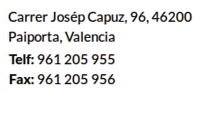
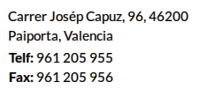

COMUNICACIÓ DE MESURES CORRECTORES
ALUMNE/A GRUP
PROFESSOR/A Horari d´atenció
Data de l´incident Hora Lloc
En aplicació de l´article 37 del decret 39/08 sobre drets i deures,es comunica al pare/mare de l´alumne la imposició de la següent mesura correctora
- Compareixença davant el cap d´estudis/director
- Retirada d´aparells electrònics(1)
- Privació del temps de recreació els dies
- Realització de les següents tasques educadores:els dies i amb l´horari
- Suspensió del dret a participar en activitats extraescolars i complementàries des de
fins a (2) - Suspensió del dret de l´assistència a les classes de
des de fina a (2)
Descripció de l´incident:
Tipicació(3) de l´incident segons l´article 35:
La comunicació als pares es fa pels següents mitjans:
Telefon Per correu Per mig de l´alumne
Amb Compareixença del pare/mare
Paiporta, de de 201
Signatura del professor/a Signatura del cap d´estudis/director
(1)El pare o la mare de l´alumne podrà retirar l´aparell a partir del dia següent de rebre esta notificació en la direcció d´estudis.
(2)El pare o la mare de l´alumne disposa d´un termini de 10 dies a partir de rebre esta comunicació per al preceptiu tràmit d´audiència amb el professor que ha imposat la mesura correctora.Per la qual cosa l´horari d´atenció del professor figura al costat del seu nom i el telèfon de l´institut en capçalera.
(3)Tipificacio:
- Les faltes de puntualitat injustificades
- Les faltes d´assistència injustificades
- Els actes que alteren el normal desenvolupament de les activitats del centre educatiu,especialment els que alteren el normal desenvolupament de les classes
- Els actes d´indisciplina
- Els actes d´incorrecio o desconsideració, les injuries i les ofenses contra els membres de la comunitat educativa
- El furt o deteriorament intencionat d´inmobles,materials,documentacio o recursos del centre
- El furt o deteriorament intencionat dels béns o materials dels membres de la comunitat educativa
- Les accions que purguen ser perjudicials per a la integritat i la salut dels membres de la comunitat educativa
- La negativa sistemàtica a portar el material necessari per al desenvolupament del procés d´ensenyament-aprenentatge
- La negativa a traslladar la informació facilitada als pares,mares,tutors o tutores per part del centre i viceversa
- L´alteraci´o o manipulació de la documentació facilitada als pares,mares,tutors o tutores per part del centre
- La suplantació de la personalitat dels membres de la comunitat escolar
- La utilització inadequada de les tecnologies de la informació i comunicació durant les activitats que es realitzen en el centre educatiu
- L´us de telèfons mobils,aparells de so i altres aparells de so i altres aparells electronics aliens al proces d´ensenyament-aprenentatge.Durant les activitats que es realitzen en el centre educatiu
- Els actes que dificulten o impedisquen el dret i el deure de l´estudi dels seus companys i companyes
- La incitació o estimul a cometre una falta contrària a les normes de convivència
- La negativa al compliment de les mesures correctores adoptades davant de conductes contràries a les normes de convivència
- L´us inadequat de les infractructures i bens o equips materials del centre
- La desobediencia en el compliment de les normes de caracter propi del centre i que estiguen incloses en el seu projecte educatiu